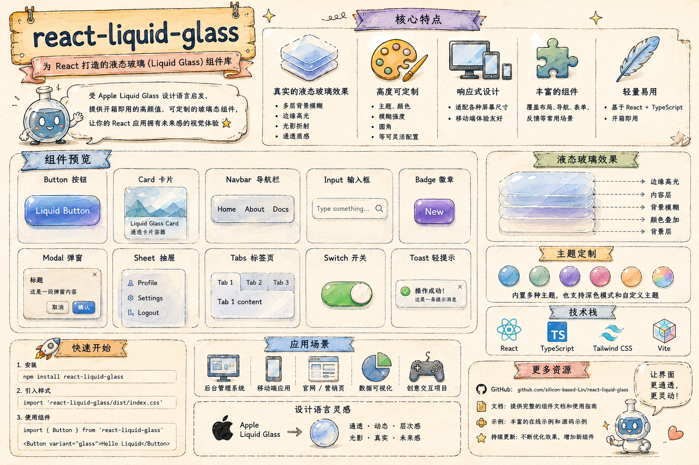

44px+
按钮、Tab、底部导航都保持触控尺寸，方便映射到移动端 header 或 bottom bar。
这个 HTML 按 Path 2，也就是 React Bits `GlassSurface` 的思路重做：SVG displacement map、RGB 色差边缘、可调 blur/alpha/rim，以及不支持 SVG backdrop filter 时的 CSS frosted fallback。它不是生产组件源码，但可以作为视觉、交互和验收覆盖面的参考。
按钮、Tab、底部导航都保持触控尺寸，方便映射到移动端 header 或 bottom bar。
静态 demo 使用 `backdrop-filter`，在不支持折射的浏览器中仍然保持毛玻璃层次。
覆盖按钮、Badge、表单、Search、Select、Tabs、Switch、Toast、Modal、Sheet、Popover 等常见 UI 表面。
复制、归档、移动、标记为重点。
构建进度、上传进度、媒体播放条都适合放在浅玻璃层里。
同一套 glass surface 可以落到后台系统、移动端信息流、数据看板、商品筛选、媒体控制和项目管理场景。
对应技能里的移动端 header 和滚动后收起模式。
host 自身不加 transform/filter，内部 glass 可点击。

README 里的概览图可作为组件覆盖范围的视觉索引。
Liquid Focus Mix
遵守系统减少动态设置。
Safari/Firefox 使用 CSS frosted glass。
这部分把技能里的关键 guardrails 转成可复制的 demo 约束，方便后续迁移到 React 组件。
外层 host 负责 fixed 定位和 pointer-events，内部 glass surface 负责视觉效果和可点击内容。
.host {
position: fixed;
left: max(12px, env(safe-area-inset-left));
right: max(12px, env(safe-area-inset-right));
pointer-events: none;
}
.glass {
pointer-events: auto;
backdrop-filter: blur(18px) saturate(1.6);
}| GlassSurface | simple-liquid-glass | 含义 |
|---|---|---|
| distortionScale | displace + lensStrength | 折射强度 |
| red/green/blueOffset | aberrationIntensity + dispersion | 色差 |
| backgroundOpacity | frost + glassColor | 霜化背景 |
| borderWidth | border | 边缘高光 |
需要 document.body 时，先 mount 后 portal。
按钮用 aria-pressed，当前链接用 aria-current。
可点击目标保持 44px 以上。
不支持折射时保持清晰毛玻璃层。
Toast 使用玻璃层但不阻挡页面交互。